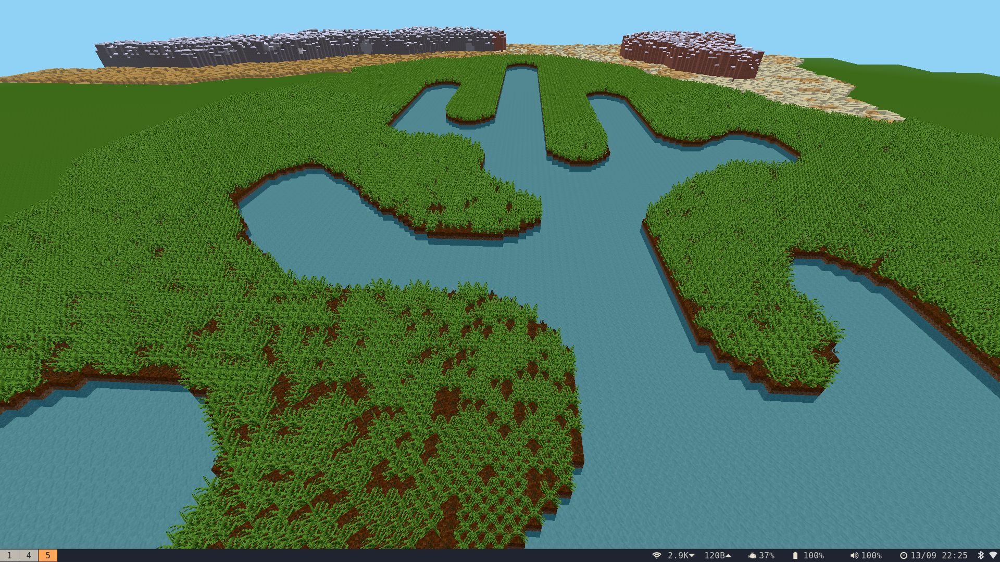

Press "." to enter slideshow, once entered "PgUp" and "PgDn" to
navigate, "Esc" to leave slideshow again.
The Children Yearn for the Mines
Importing Ultima IV maps into Minecraft MinetestLuanti
Nick Moore
Procrastination
The Primordial Code
TODO:
- history of cool stuff
- 4 billion years of biology in 10 minutes
- even cooler stuff
- you are in a twisty maze of wikipedia articles, all different
- evolution wtaf are you don
- is everything a fish?
- XXX TODO finish todo list LOL
Minecraft
Images of Minecraft are the intellectual property of Microsoft.
This is not a place of honor.
Do not fold, spindle or mutilate.
Reading the Map
with open("dat/WORLD.MAP", "rb") as fh:
ultima_world = fh.read(256*256)
def get_block(x, y):
return ultima_world[(y//32)*8192+(x//32)*1024+(y%32)*32+(x%32)]
Writing the Map
Minecraft
Minetest
Luanti
def block_to_data(block):
# block is a binary array of node IDs in ZYX order.
assert len(block) == 4096
# headers
yield 14 # flags: generated, lighting expired, day_night_differs, NOT is_underground
yield from u16(0) # lighting needs recomputing in all directions
yield from u32(0xffffffff) # timestamp
# block mapping: only bother including blocks present in
# this sector.
present_blocks = set(block)
present_block_map = [ (k, v) for k, v in block_map.items() if v in present_blocks ]
yield 0 # mapping version
yield from u16(len(present_block_map)) # length of block map
for k, v in present_block_map:
yield from u16(v)
yield from u16(len(k))
yield from bytes(k, 'ascii')
yield 2 # content_width (always 2)
yield 2 # params_width (always 2)
for b in block:
yield from u16(b) # param0
for b in block:
yield 0 # param1
for b in block:
yield 0 # param2
yield from u32(0)
yield 10 # timer record size (always 10)
yield from u16(0) # no timers
def block_to_binary(block):
yield 29 # chunk version number
yield from zstd.compress(bytes(block_to_data(block)))
db = sqlite3.connect('/home/nick/.minetest/worlds/x/map.sqlite')
def write_block(x, y, z, block):
pos = z * 4096 * 4096 + y * 4096 + x
data = bytes(block_to_binary(block))
db.execute("insert or replace into blocks (pos, data) values (?, ?)", (pos, data))

Ultima IV in Luanti
- Mountains
- Trees
- Shrines
- Dungeons
- Moongates
- XXX TODO finish TODO list ROFLcopter
Procrastination
https://nick.zoic.org/PYCON25/